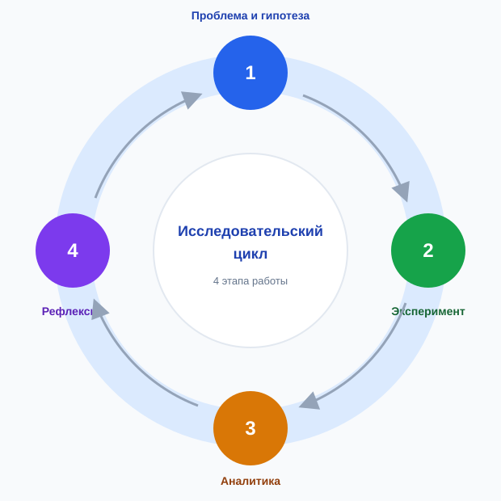

Работа с ошибкой
Ошибка не прерывает работу: система показывает, на каком преобразовании возникло расхождение.
Четыре этапа исследовательского цикла, поддерживаемые встроенной аналитикой платформы.

Преподаватель формулирует вопрос, например: «Как изменение коэффициента при x влияет на число экстремумов функции?» Обучающиеся фиксируют гипотезы до начала экспериментов.
Строится семейство графиков, варьируются параметры, отыскиваются критические значения.
Наглядное наблюдение связывается с символьными вычислениями.
Сопоставление гипотезы с выводом; при изучении производной — переход от стремления секущей к касательной к пределу отношения приращений.
Учитель задаёт функцию f(x) = x³ − 3x и просит предсказать число экстремумов, не выполняя вычислений.
Обучающиеся строят график в среде, варьируют коэффициенты и сравнивают исходное предсказание с наблюдаемым результатом.
Переход к f′(x) = 3x² − 3, поиск критических точек x = ±1 и объяснение смены знака производной.
Обучающиеся указывают, какая информация о функции была получена визуально, а какая — аналитически.
Ошибка не прерывает работу: система показывает, на каком преобразовании возникло расхождение.
Агрегированная аналитика: доля неверных гипотез, распределение времени, список типичных ошибок.
Методика апробирована в очном и дистанционном вариантах с сохранением логики исследовательского цикла.
Каждый тип задания имеет свою последовательность работы. Сохранён общий исследовательский цикл: проблема — эксперимент — подтверждение — рефлексия.
Сопоставление графика, формулы и описания.
Методика →Варьирование параметров и описание их влияния.
Методика →Обоснование переходов и смены знака.
Методика →Гипотеза, проверка и аргументация вывода.
Методика →Для заданий, в которых нужно сопоставить график, формулу и словесное описание зависимости.
Учитель даёт три представления одного объекта и спрашивает: «По какому признаку можно узнать, что они описывают одну и ту же функцию?»
Обучающиеся называют области определения, нули, знак, монотонность, экстремумы и поведение на бесконечности; каждый признак связывается с видом графика.
Пары «график — формула — описание» проверяются подстановкой характерных точек и сравнением свойств, а не внешним сходством рисунка.
Формулируется правило: какие признаки оказались решающими и почему остальные могли быть неоднозначными.
Для заданий, в которых нужно изменить параметры и исследовать их влияние на поведение функции.
Фиксируется вопрос: «Как изменение коэффициента при x влияет на число экстремумов?» Обучающиеся записывают предварительное предположение.
Строится семейство графиков f(x) = x³ + ax при разных a; отмечается критическое значение параметра, при котором меняется число экстремумов.
Вычисляется производная f′(x) = 3x² + a; условие существования двух нулей a < 0 объясняет наблюдение.
Модель сравнивается с гипотезой: где визуальный вывод совпал с вычислением, а где потребовалась уточнённая формулировка.
Для заданий, в которых нужно выбрать или сформулировать корректное обоснование перехода от одного выражения к другому.
Показываются два выражения или участки графика и вопрос: «Какое свойство позволяет перейти от первого ко второму?»
Обучающиеся перебирают возможные свойства: монотонность, знак производной, теорема о крайних значениях — и отбрасывают неподходящие.
Выбранное свойство подтверждается вычислением: например, смена знака f′ в точке x = −1 для f(x) = x³ − 3x.
Обучающийся формулирует вывод своими словами и указывает, какая информация была получена из графика, а какая — из формулы.
Для заданий, в которых нужно сформулировать гипотезу, проверить её в среде и аргументировать вывод.
Преподаватель задаёт проблемный вопрос; обучающиеся фиксируют предположение до построения графиков, чтобы сделать мышление видимым.
Строится семейство графиков, варьируются параметры, отыскиваются критические значения; каждый результат сравнивается с исходным предсказанием.
Наблюдение подтверждается символьными вычислениями (производная, нули, знак), после чего формулируется вывод.
Обучающиеся объясняют, какие данные получены визуально, какие аналитически, и насколько вывод совпал с гипотезой.